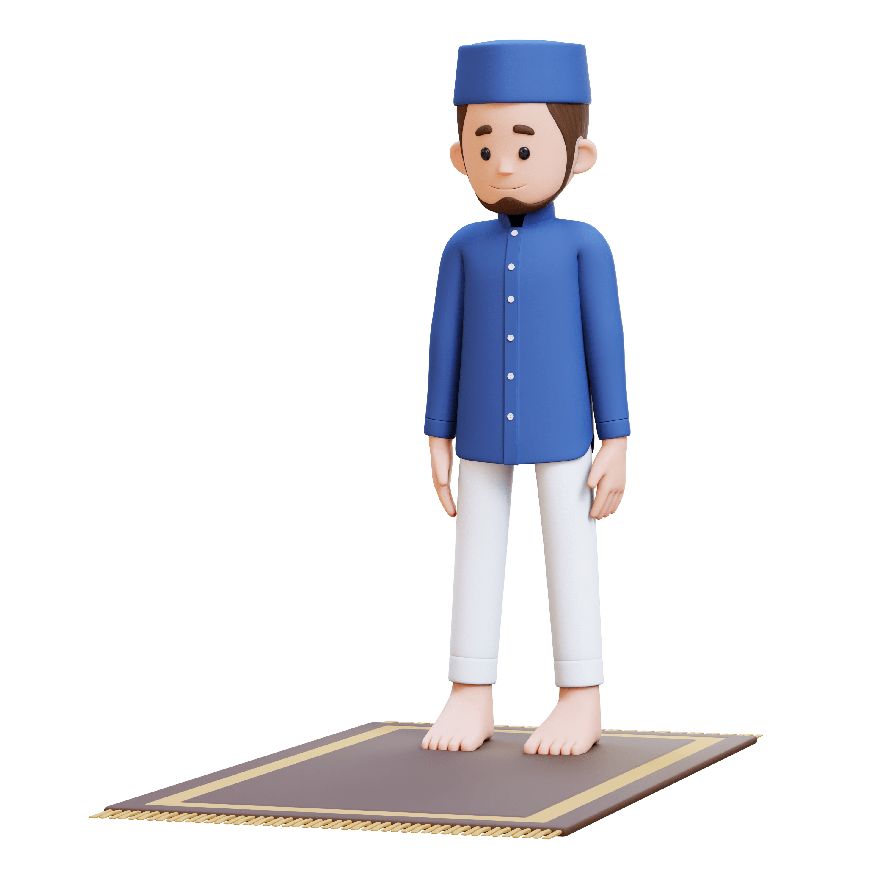
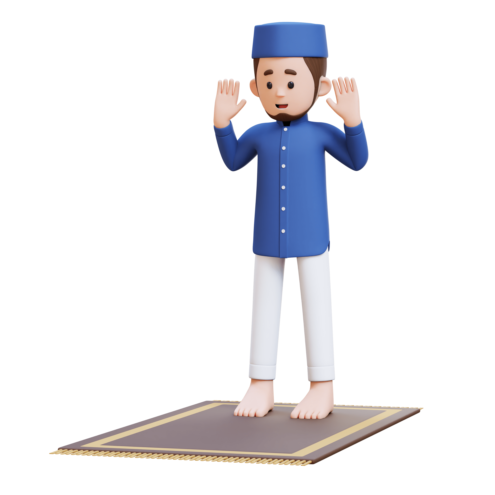
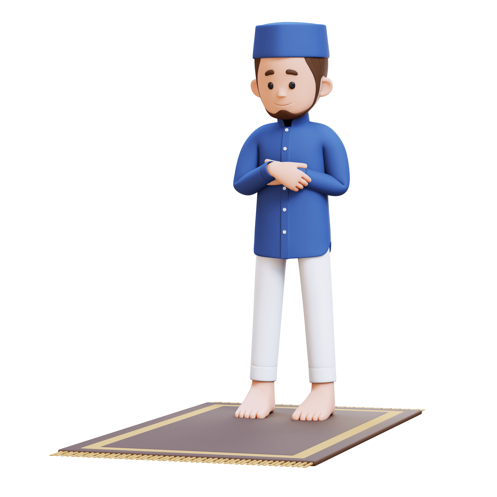
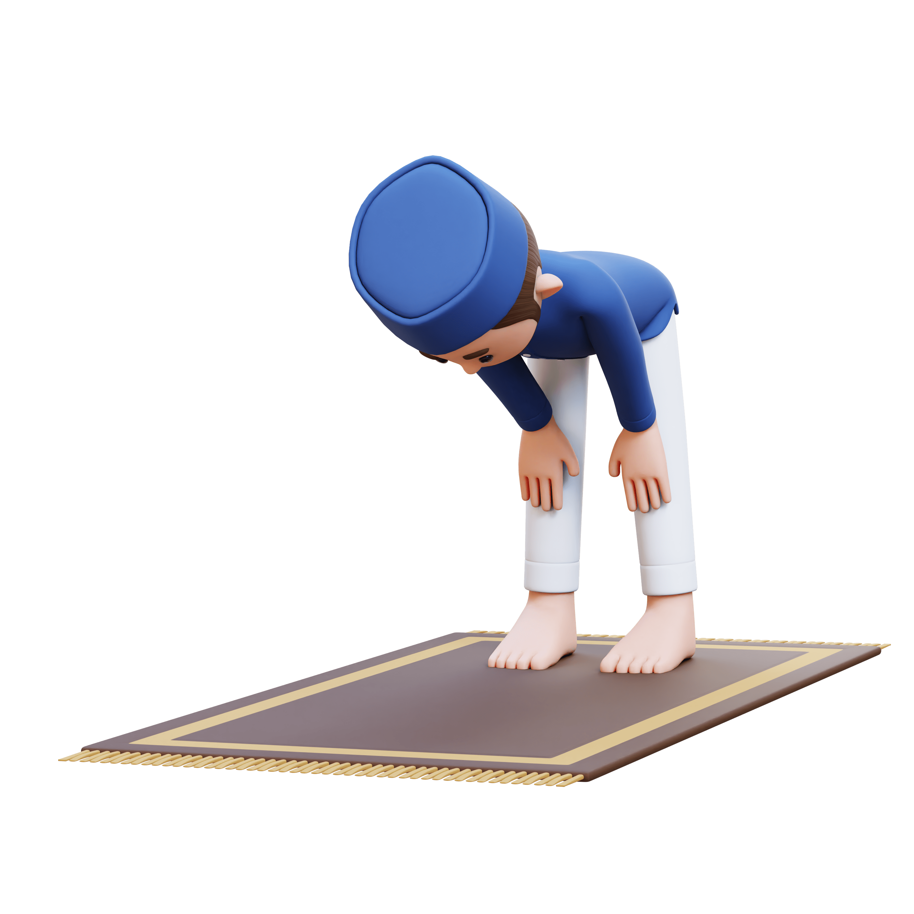
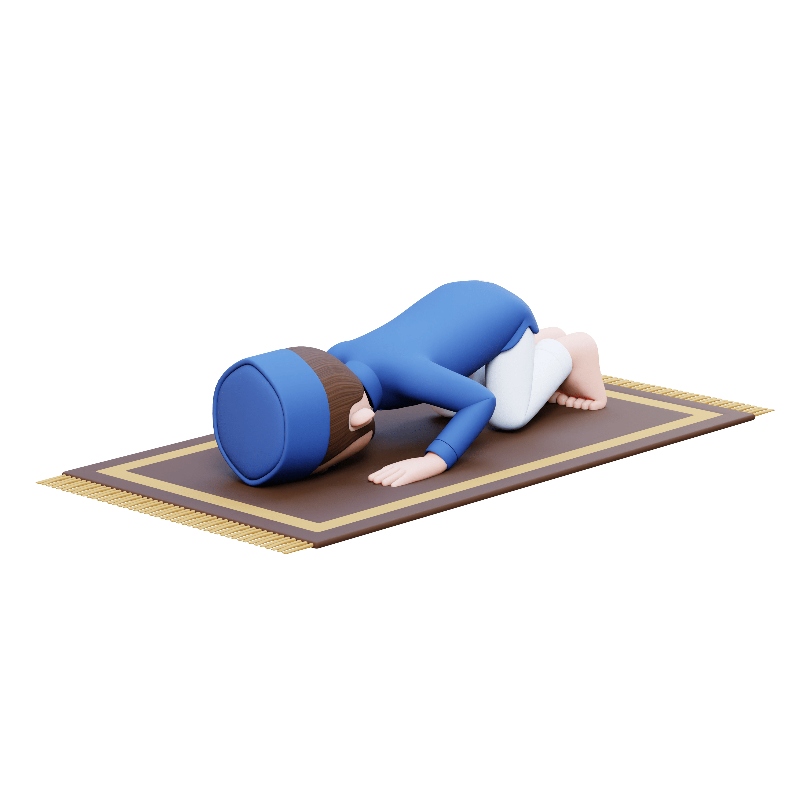
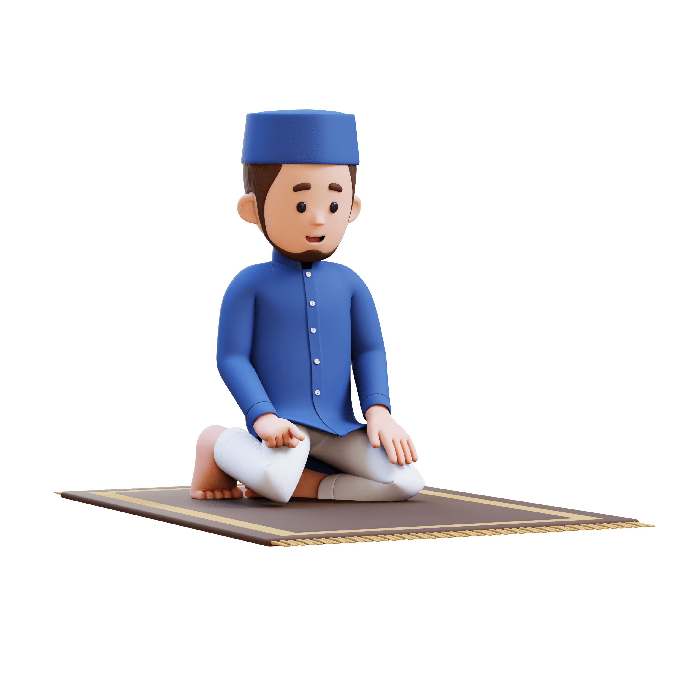

Panduan Shalat
Persiapan Shalat
Syarat Sah Shalat:
- Suci dari hadats besar dan kecil
- Menutup aurat
- Suci badan, pakaian, dan tempat dari najis
- Menghadap kiblat
- Telah masuk waktu shalat
Langkah-langkah Shalat
1. Niat
Berdiri tegak menghadap kiblat dan berniat sesuai shalat yang akan dikerjakan.
أُصَلِّي فَرْضَ الظُّهْرِ أَرْبَعَ رَكَعَاتٍ لِلَّهِ تَعَالَى
Ushalli fardhodh dhuhri arba'a raka'aatin lillaahi ta'aalaa
Artinya: "Saya berniat shalat fardhu Dzuhur empat rakaat karena Allah Ta'ala."
2. Takbiratul Ihram
Mengangkat kedua tangan sejajar dengan telinga sambil mengucapkan:
اللهُ أَكْبَرُ
Allaahu Akbar
Artinya: "Allah Maha Besar"
3. Membaca Al-Fatihah
Setelah bersedekap, membaca Surah Al-Fatihah:
بِسْمِ اللَّهِ الرَّحْمَنِ الرَّحِيمِ...
Bismillaahir rahmaanir rahiim...
Artinya: "Dengan nama Allah Yang Maha Pengasih, Maha Penyayang..."
4. Rukuk
Rukuk dengan tangan diletakkan pada lutut dan membaca:
سُبْحَانَ رَبِّيَ الْعَظِيمِ
Subhaana rabbiyal 'azhiim
Artinya: "Maha Suci Tuhanku Yang Maha Agung"
5. I'tidal
Berdiri tegak kembali setelah rukuk sambil membaca:
سَمِعَ اللَّهُ لِمَنْ حَمِدَهُ
Sami'allaahu liman hamidah
Artinya: "Allah mendengar orang yang memuji-Nya"
6. Sujud
Bersujud dengan tujuh anggota tubuh menyentuh lantai dan membaca:
سُبْحَانَ رَبِّيَ الأَعْلَى
Subhaana rabbiyal a'laa
Artinya: "Maha Suci Tuhanku Yang Maha Tinggi"
7. Duduk di Antara Dua Sujud
Duduk dengan membaca:
رَبِّ اغْفِرْ لِي وَارْحَمْنِي
Rabbighfir lii warhamnii
Artinya: "Ya Allah, ampunilah aku dan kasihanilah aku"
8. Tahiyat Akhir
Setelah rakaat terakhir, membaca tahiyat akhir:
التَّحِيَّاتُ لِلَّهِ وَالصَّلَوَاتُ وَالطَّيِّبَاتُ...
At-tahiyyaatu lillaahi was-shalawaatu wat-thayyibaatu...
Artinya: "Segala penghormatan, keberkahan, dan kebaikan adalah milik Allah..."
9. Salam


Mengucapkan salam ke kanan dan ke kiri sambil mengucapkan:
السَّلَامُ عَلَيْكُمْ وَرَحْمَةُ اللَّهِ
Assalaamu 'alaikum wa rahmatullaah
Artinya: "Semoga keselamatan dan rahmat Allah tercurah kepadamu"
Waktu-waktu Shalat
Shubuh
Dari terbit fajar shadiq hingga terbit matahari
Dzuhur
Dari tergelincirnya matahari hingga bayangan benda sama dengan tinggi benda
Ashar
Dari bayangan benda lebih panjang dari tinggi benda hingga terbenam matahari
Maghrib
Dari terbenam matahari hingga hilangnya mega merah
Isya
Dari hilangnya mega merah hingga terbit fajar shadiq